給超音波室同仁的互動式 CT/US 對照教學頁 — 肝段與門脈定位、CT phase、liver lesion 鑑別、HU attenuation 工具。
Interactive CT/US teaching tool — segmental anatomy, contrast phases, lesion differentials, and HU attenuation calculators.
點任一個 segment 看它的位置、門脈分層與超音波 landmark。Couinaud 把肝臟分成 8 個功能 segment，每段有獨立的血流與膽汁引流，所以 CT/MRI 報告都用 segment 定位。
| Portal vein | 分支 → segment |
|---|---|
| Right PV · anterior | 上 VIII / 下 V |
| Right PV · posterior | 上 VII / 下 VI |
| Left PV | II · III · IV (segment 4 = medial) |
| 分層用 Portal vein level | 上 (superior) | 下 (inferior) |
|---|---|---|
| Right PV level | VII / VIII | V / VI |
| Left PV level | II / IVa | III / IVb |
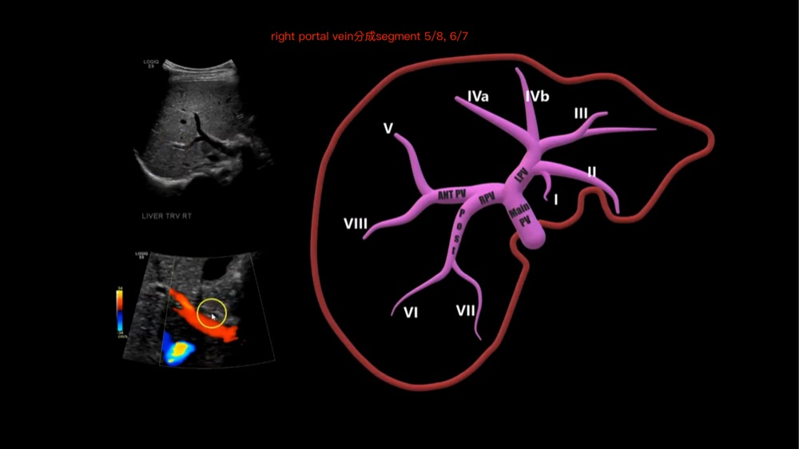
Right PV：anterior → 上 8 / 下 5；posterior → 上 7 / 下 6。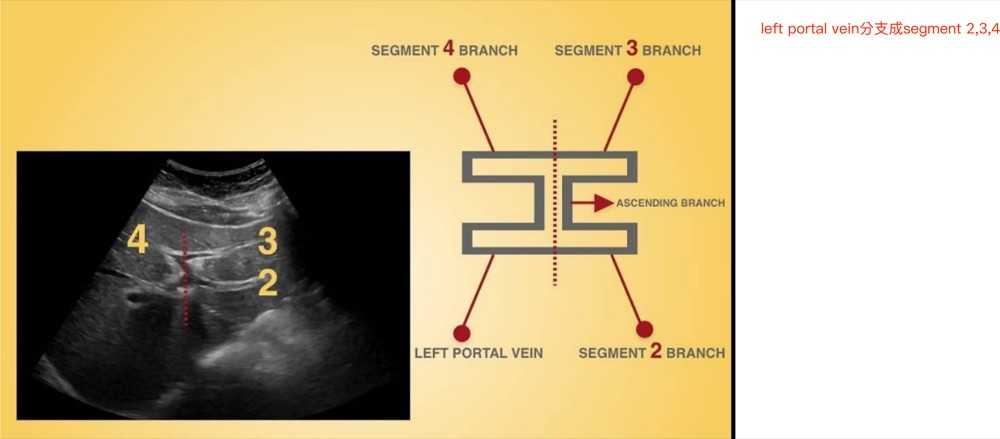
Left PV「工字型」H-shape → segment 2 / 3 / 4 branch + ascending branch。| Plane | Landmark | 分開 |
|---|---|---|
| Middle hepatic vein / Cantlie line | IVC → gallbladder fossa | functional right vs left hemiliver |
| Right hepatic vein | 右葉內 | right anterior (V/VIII) vs posterior (VI/VII) |
| Falciform ligament / umbilical fissure（內含 ligamentum teres 圓韌帶） | 左葉前緣 | left medial (IV) vs lateral (II/III) |
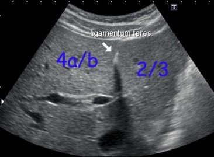
Ligamentum teres 把左葉分開：viewer 左 = 4a/b（medial, segment IV），viewer 右 = 2/3（lateral）。拉動下方滑桿，模擬把探頭/CT 由 肝頂 → 門脈 → 肝下緣 掃下去時，同一個切面會出現哪些 segment。（自繪示意，非真實 CT。真實可 scroll 的標註 CT 切面見下方 Radiopaedia。）
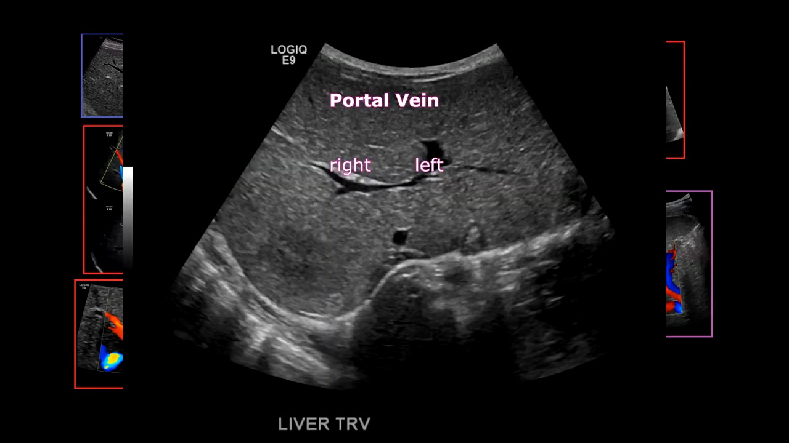
Liver TRV — main PV 分叉：看到 right / left PV 的「T 字」分叉是門脈水平的定位基準。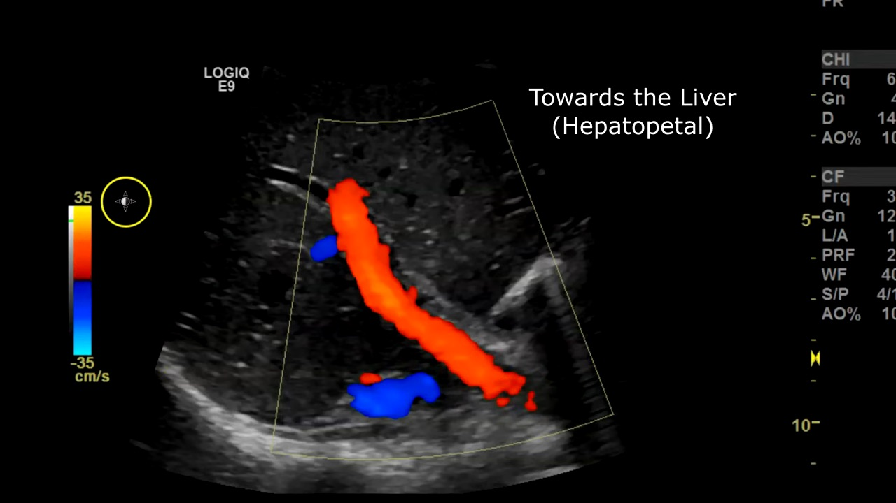
此例為 hepatopetal flow（朝肝，正常）。注意：Color Doppler 紅/藍取決於機器 color map 與探頭方向，不可背成「紅一定朝肝」；方向判讀應結合血流相對肝門/肝內走向與 spectral Doppler。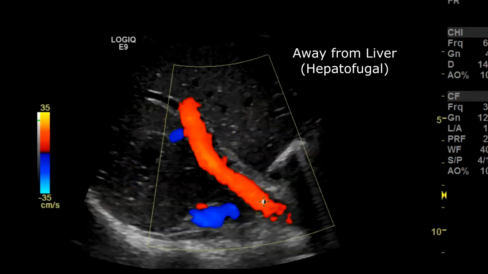
此例示意 hepatofugal flow（離肝，門脈高壓警訊）。顏色本身需依 color map／探頭方向判讀。由正中往右掃的矢狀/縱切面 — 探頭位置改變就切到不同 segment。拖滑桿 / ◀ ▶ / 圖上滾輪 巡覽；角落 3D 小圖標示該切面對應的 segment。
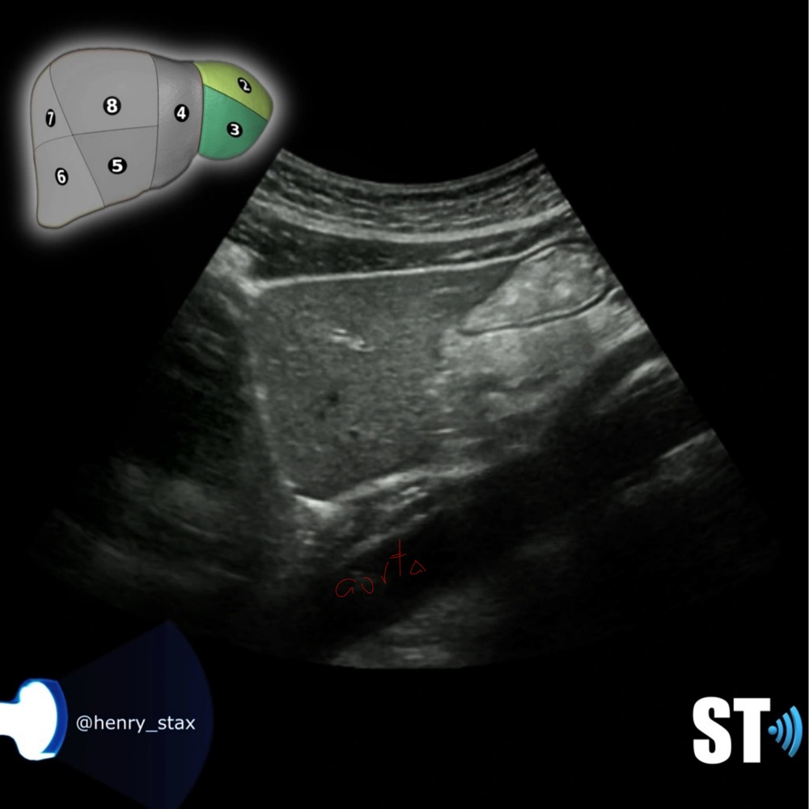
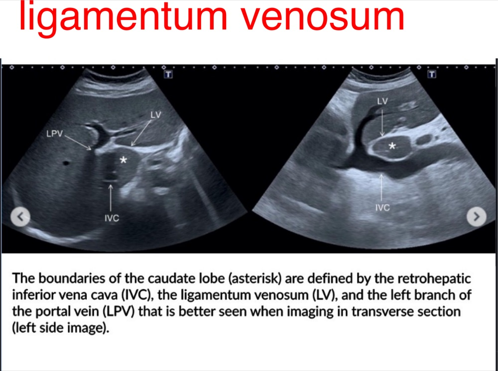
Ligamentum venosum (LV)：與 retrohepatic IVC + LPV 三者圍出 caudate lobe（segment I, ＊）邊界；橫切（左圖）最好辨識。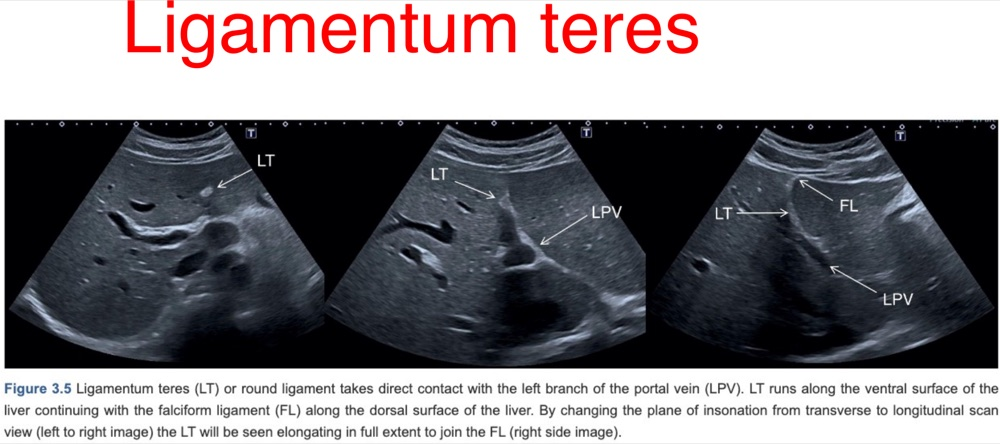
Ligamentum teres (LT, round ligament)：貼 LPV、沿肝腹側走，向上接 falciform ligament (FL)。是分 左葉 medial(IV) / lateral(II,III) 的 landmark。拖滑桿 / ◀ ▶ / 圖上滾輪 巡覽。橫切看 body 長軸與血管 landmark（celiac → SV/SMA → SMV）；縱切 A→E 由 head 到 tail。
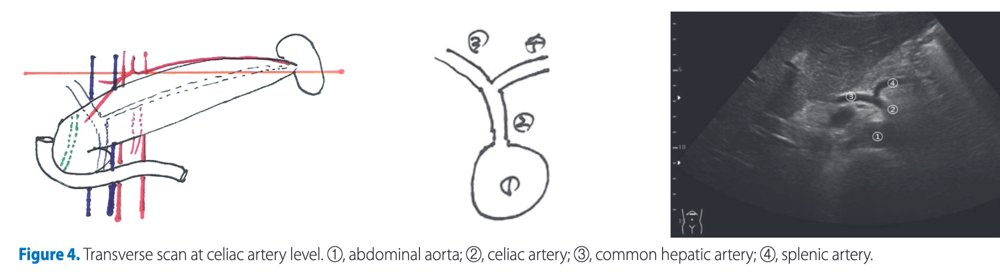
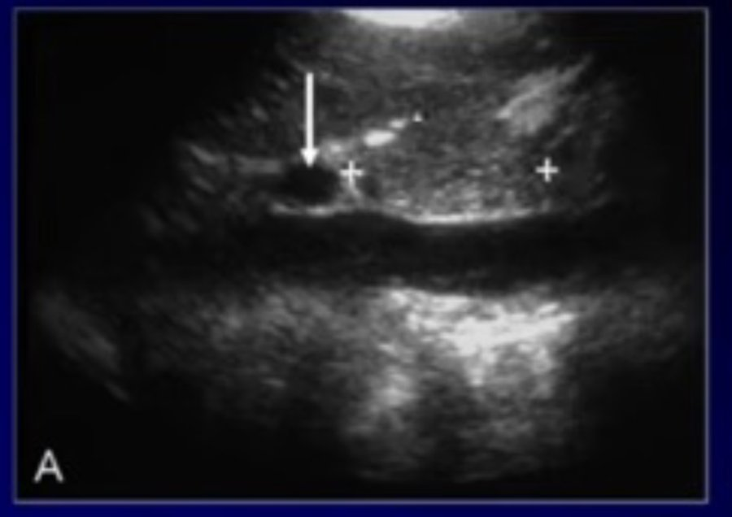
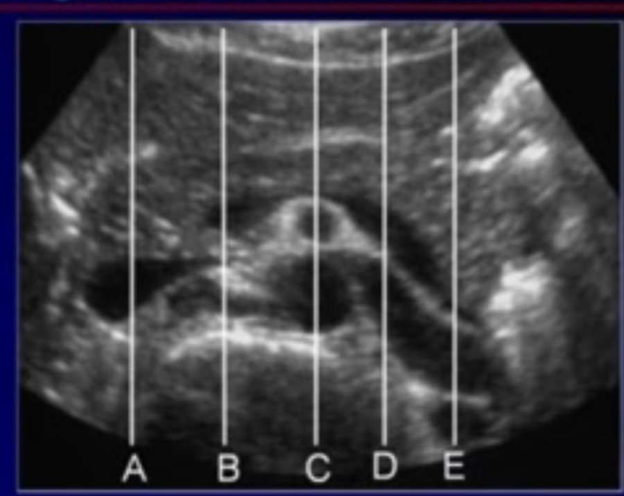
逐層標註肝段的軸向 CT（24 層，肝頂 → 肝下緣）。拖滑桿、按 ◀ ▶、或 在圖上滾動滑鼠滾輪 即可 scroll。每張左上角為該層出現的 segment / vessel 圖例。
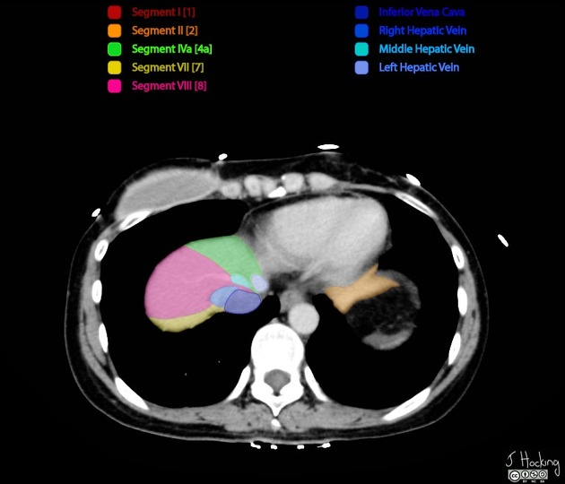
肝臟是 dual blood supply：正常肝實質約 80% 來自 portal vein、20% hepatic artery。所以 hypervascular tumor 在 late arterial 最亮，hypovascular lesion 在 portal venous 最清楚。同一顆病灶不要只看一個 phase。
拖滑桿 / ◀ ▶ / 圖上滾輪，看同一套器官在不同 phase 哪些結構/病灶變亮。
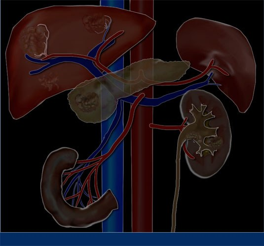
| Phase | 約略時間 | 主要用途 | 肝臟病灶重點 |
|---|---|---|---|
| Non-enhanced (NECT) | 顯影前 | 鈣化、脂肪、出血、高密度結節 | 避免把原本高密度結節誤判成 enhancement；脂肪肝定量 |
| Early arterial | 15–20 s | 動脈最亮、器官尚未 enhance | 多用於血管問題，不是肝腫瘤最佳時間 |
| Late arterial | 35–40 s | 動脈供血病灶最明顯 | HCC · FNH · adenoma · hypervascular met、部分 hemangioma 變亮 |
| Portal venous / hepatic | 70–80 s | 肝實質 enhance 最強 | Hypovascular met · cyst · abscess 最易被看見；HCC 可出現 washout（不是必然，且需符合 nonperipheral washout 定義） |
| Delayed / equilibrium | 6–10 min | delayed enhancement、纖維組織 | Cholangiocarcinoma · 纖維化 · capsule · scar |
| MRI sequence | 要抓的概念 |
|---|---|
| T1WI | fat、blood product、proteinaceous material 可偏亮 |
| T2WI | 水、cyst、hemangioma 常很亮 |
| DWI (high b) | 細胞密度高或膿瘍可亮（restricted diffusion） |
| ADC | 真 restricted diffusion 通常 ADC 低；小心 T2 shine-through |
| Dynamic contrast | 對應 CT 的 arterial / portal venous / delayed pattern |
| HBP（hepatobiliary phase） | gadoxetate MRI 才有（~20 min）；多數非肝細胞性/惡性病灶偏低訊號，但不可單獨診斷 |
選病灶在各 phase 的表現 + 特徵，系統列出每種病灶「對到哪些典型特徵」並計數（透明比對，非加權分數、非機率）。HCC 的正式分級走下方 validated LI-RADS。不用每格都選。
僅適用高風險族群（cirrhosis / chronic HBV）。LR-5 ＝ observation ≥10 mm + nonrim APHE + 足夠的 additional major features。一般風險肝臟不適用此演算法。
| HU | 組織 |
|---|---|
| ≈ −1000 | Air 空氣 |
| −100 ~ −40 | Fat 脂肪 |
| 0 | Water 水 |
| 0 ~ 20 | Simple fluid / ascites |
| 30 ~ 70 | Blood / complex fluid（急性出血 ≈45） |
| 30 ~ 60 | Soft tissue / 多數實質器官 |
| > 100 | Calcium / bone / 顯影劑 |
同一 ROI，比較打藥前後。增加 ≥20 HU 通常代表 true enhancement。
⚠️ 兩種儀器、兩套標準，不可互換：CT 用 HU（liver vs spleen）；US 用回音對比（liver vs kidney）。請選對應分支。
給超音波室同仁：高風險族群（cirrhosis 等）HCC surveillance 以 US 為第一線。每次掃完給兩個分數 —— US category（看到什麼） 與 VIS（這次看得清不清楚）。
| US category | 定義 | 建議處置 |
|---|---|---|
| US-1 Negative | 無可疑 observation | routine 6-month US surveillance |
| US-2 Subthreshold | <10 mm、非明確良性 observation | 3–6 個月短期追蹤，共兩次；若仍 <1 cm 或消失 → 回到 6 個月 surveillance |
| US-3 Positive | ≥10 mm observation、≥10 mm parenchymal distortion、或 new portal/hepatic vein thrombus | multiphase CECT / MRI / CEUS（CT/MRI 用 CT/MRI LI-RADS；CEUS 用 CEUS LI-RADS） |
| VIS | 意義 | 教學重點 |
|---|---|---|
| VIS-A | no / minimal limitation | 影像品質可接受 |
| VIS-B | moderate limitation | 可能遮住 <10 mm 小病灶，但通常仍依 US category 處理 |
| VIS-C | severe limitation | 若 category 為 US-1/US-2：3 個月內 repeat US；repeat 仍 VIS-C 或高風險再發 → 改 alternative surveillance（abbreviated MRI、contrast MRI、multiphase CT）。若已是 US-3：直接進 diagnostic multiphase CT/MRI/CEUS（不是 repeat US）。 |
| 情境 | 建議 |
|---|---|
| AFP ≥20 ng/mL 或連續上升 / doubling | 需要 diagnostic evaluation |
| AFP abnormal + US 有對應 lesion | multiphase MRI / CT / CEUS |
| AFP abnormal 但 US 無對應 lesion | multiphase MRI 或 CT；CEUS 不適合（沒有可 target 的 finding） |
| AFP ≥200 ng/mL 但 CT/MRI 找不到 | 換另一種 modality，並考慮 chest/pelvis imaging ± FDG PET/CT |